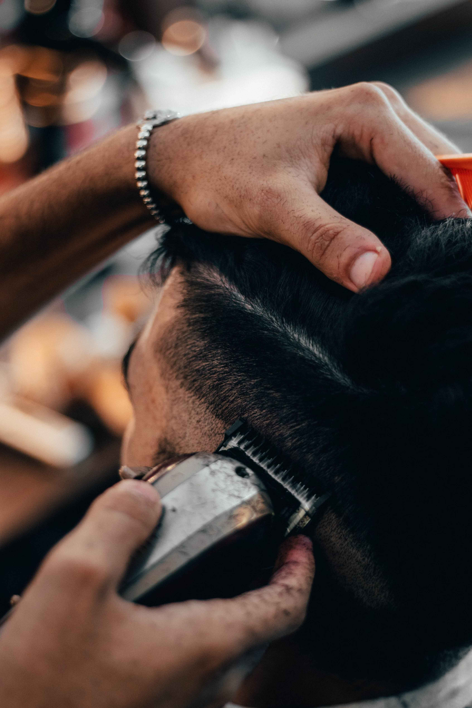
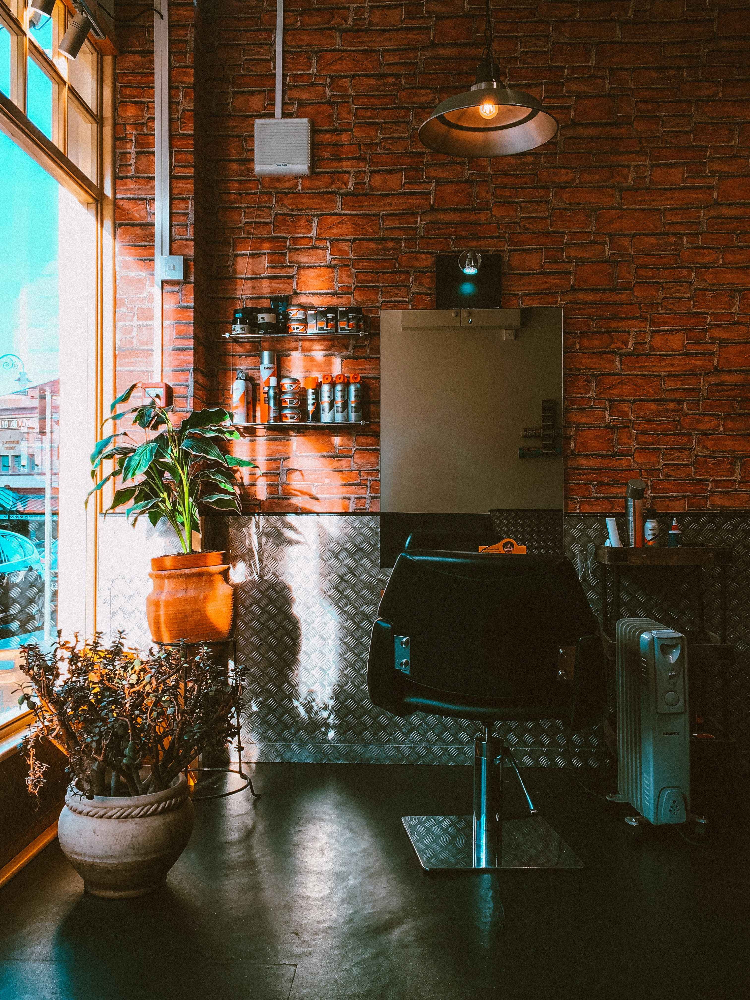
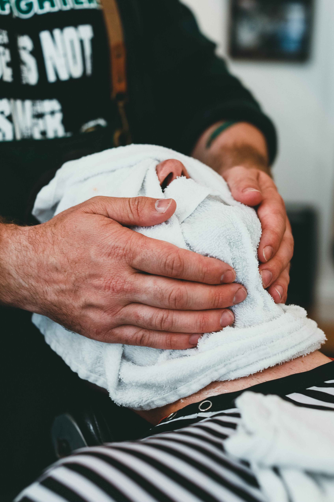

In the chair
Full-bleed · scrim · serif type


Warm, close, documentary — the clippers running, hands, faces, the travelling chair. Real Rotterdam light and grain, never flat stock. Placeholder shots here; swap in real session photography.